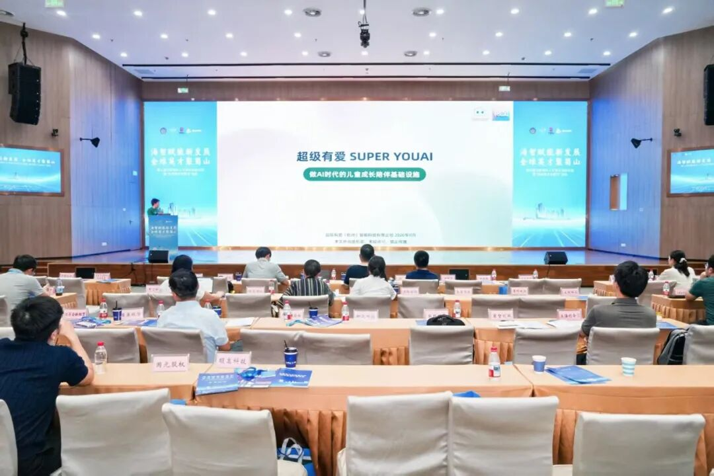
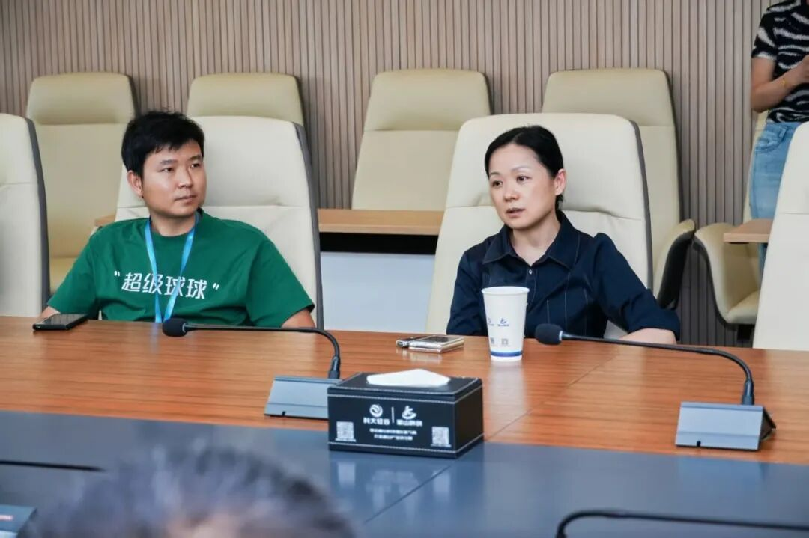
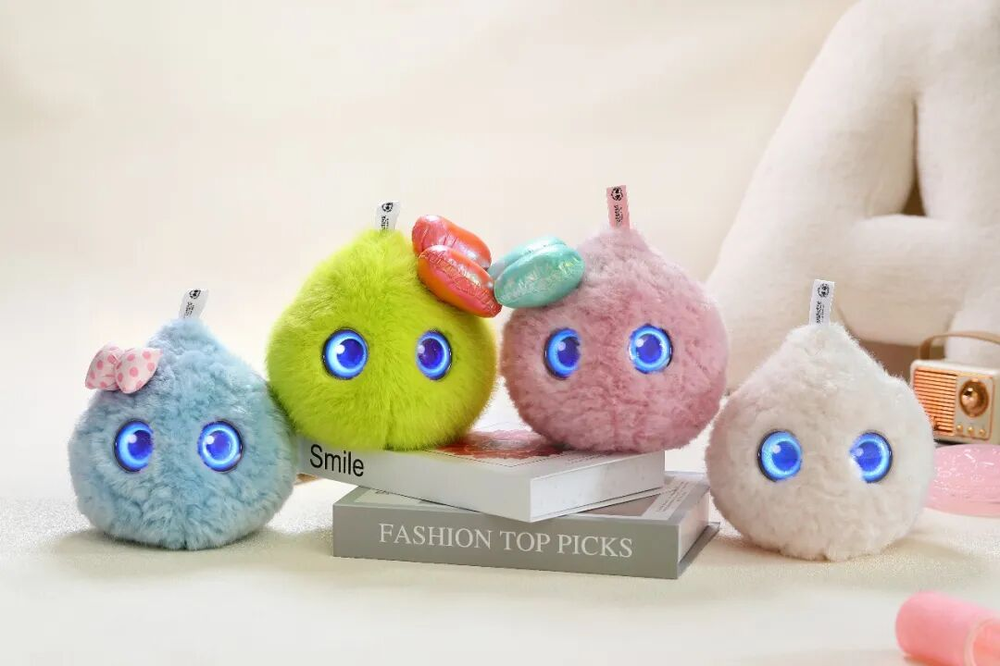
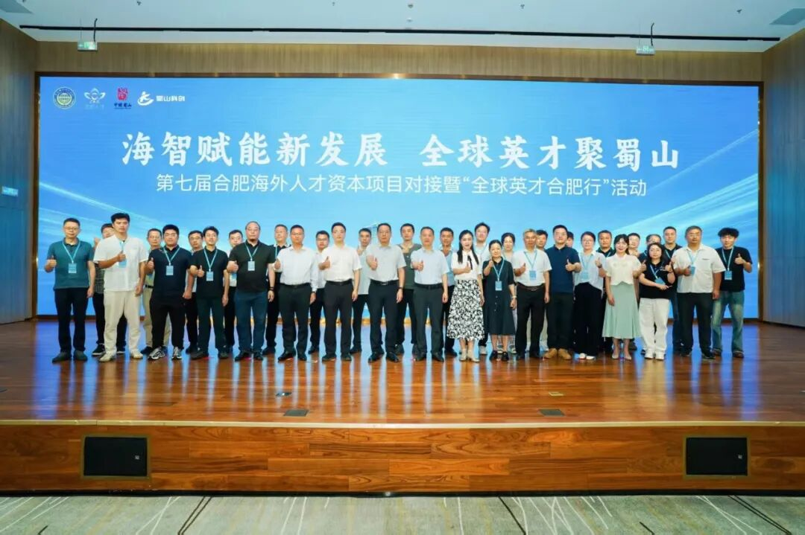

盛夏合肥，万物竞发。2026第七届合肥海外人才资本项目对接暨“全球英才合肥行”活动在蜀山经济技术开发区举行，全球英才与前沿科技在此交汇碰。
8月7日，2026第七届合肥海外人才资本项目对接暨“全球英才合肥行”活动在蜀山经济技术开发区正式举办。合肥市科协党组书记、主席朱涵，合肥市侨联党组书记、主席徐为民，蜀山区委副书记、区长刘智等领导出席活动。来自金融投资机构、海外科创团队、蜀山区企业代表以及市、区相关部门负责同志近百人齐聚一堂，共话科创未来。

活动现场，20家海外科创团队项目集中路演，涵盖新一代信息技术、新能源、生物医药、人工智能等合肥重点产业方向。作为人工智能赛道的代表性产品，超级有爱（杭州）智能科技有限公司携自研王牌——超级球球AI陪伴机器人惊艳亮相，在众多前沿科技项目中脱颖而出，成为全场备受关注的焦点之一。
我们是谁：深耕情绪健康领域的AI先锋
超级有爱（杭州）智能科技有限公司，是一家深耕人工智能在情绪健康与心理陪伴领域的创新型企业。公司核心研发团队由清华大学等国内名校及布里斯托等海外名校博士组成，拥有6年研发积淀、9代产品迭代经验，手握24项情感交互专利及完整的IP形象版权等知识产权。
公司自主研发的“有爱AI心理模型”，面向3-12岁青少年，能够精准识别情绪并科学疏导。我们的愿景，是以技术驱动专业心理健康服务的普惠化，让每一个需要情绪支持的人都能获得及时、有效的陪伴与疗愈。
走进合肥：一场意义非凡的亮相
本次活动由合肥市科学技术协会、中共合肥市委人才工作局和蜀山区人民政府联合主办。作为国家海外人才离岸创新创业基地（合肥）的品牌活动，合肥海外人才资本项目对接活动已连续举办七届，累计招募全球科创项目超100个，促成20个高水平项目签约落地。

在“科大硅谷”蜀山园硅谷大厦的活动现场，超级球球一经展出便吸引众多目光。合肥市科协党组书记、主席朱涵，蜀山区委副书记、区长刘智等领导亲临超级有爱展位参观指导，认真听取了产品研发理念与核心技术介绍，对超级球球在青少年心理健康守护领域的创新探索给予高度关注和充分肯定。

公司副总经理何昌耀向与会嘉宾详细介绍了超级球球的研发理念与核心技术。团队成立仅一年，核心成员曾任伯克利大学、西门子公司等核心岗位，已斩获3项国家级AI赛事大奖。何昌耀表示：“我们自主研发了面向青少年的AI心理模型，可精准识别情绪并科学疏导。”此次专程赶赴合肥，正是希望自研的AI模型能够与合肥在人工智能等战新产业的政策配套和人才资源优势相结合，辅助项目进一步发展。
超级球球：一个会“疗愈”的AI伙伴
那么，超级球球究竟是一款怎样的产品？它为何能获得现场领导、投资机构与海外英才的一致关注？
超级球球是一款疗愈级AI陪伴机器人，专为3至12岁青少年儿童设计，主打日常陪伴和心理疗愈功能。它拥有毛绒软萌的外观，通过纯语音交互打造低刺激、高安全的陪伴终端——和市面上主流带屏早教机不同，超级球球采用无屏幕轻量化设计，让孩子在安全、舒适的环境中敞开心扉。
四大“人设”，精准匹配不同性格
超级球球共有四种不同颜色，每一种都有着独特的“人设”和特长：

- 蓝色款小话痨：是个“贴心小话匣子”，适宜性格内向、不善表达的孩子，帮助孩子在低压力的语音互动中勇敢开口，从“不敢说”变成“我愿意说”。
- 绿色款小坚强：专治“玻璃心”、缺乏自信的孩子，帮助孩子用正向激励建立强大内心，在每一次陪伴中积累勇气，让“我不行”变成“我再试试”。
- 粉色款不暴燥：适合容易暴躁、发脾气的小朋友，帮助孩子认识情绪、表达情绪，在温柔陪伴中学会情绪管理，告别“一点就炸”。
- 白色款不拖拉：推荐给做事拖拉、专注力不足的孩子，帮助孩子在趣味互动中建立时间观念，培养良好的生活和学习习惯，让拖延不再成为家长的“心头病”。
这种精细化的性格匹配设计，让每一个孩子都能找到最适合自己的成长伙伴。
硬核疗愈实力：专业级心理支持，触手可及
超级球球的疗愈功能，绝非简单的“聊天机器人”可比。
首先，它拥有专业的“大脑”。超级球球的疗愈模型以先进的大语言模型为基础，由从业20年以上的心理专家团队与AI专家团队联合训练。产品对话功能来自一套基于发展心理学的模型，能通过对话对少儿进行心理状态评估、共情陪伴对话并提供情绪疏导。
其次，它懂得“倾听”与“陪伴”。球球是一个爱你的AI伙伴。它不说话的时候，就在那里。你说，它就听。没有复杂的功能堆砌，只有陪伴本身。孩子情绪低落时，常常缺少合适的倾诉对象，而超级球球可以成为专属的“情绪树洞”。
最后，它拥有触感交互的温度。超级球球不仅会听、会说，还具备毛绒外观和触感交互能力。在球球头顶位置按有传感器，孩子可以通过触摸与它建立情感连接。这种多维度的交互方式，让疗愈不仅仅停留在语言层面，更深入到触觉与情感的连接之中。
正如公司所定位的——“让孩子愿意开口，让家长更懂孩子”。超级球球要做的，是在父母忙碌时填补陪伴的空缺，在专业心理咨询师难以触及时提供及时的情绪支持。
走向世界：从杭州到全球
超级球球的实力，已经获得了市场的验证。今年，超级球球在美国CES展会上全球首发，销售网络已覆盖北美、欧洲和东南亚等地，销量近五万台。
2026年7月，超级球球入选WAIC世界人工智能大会官方智能伙伴，进驻核心主会场上海世博展览馆。从杭州梦想小镇走向世界舞台，从西湖边的首次亮相到合肥蜀山的精彩展示，超级球球正在用科技的温度，治愈越来越多孩子的心灵。
写在最后
这次合肥之行，对超级有爱而言不仅是一次展示，更是一次新的起点。合肥在人工智能等战略性新兴产业上的政策配套和人才资源优势，让我们看到了更广阔的发展空间。

本次活动不仅为海外高层次人才与蜀山区搭建了双向奔赴的对接桥梁，也为超级球球链接投融资机构、拓展产业合作提供了宝贵机遇。未来，超级有爱将继续深耕人工智能在情绪健康领域的应用，让超级球球走进更多家庭，为更多孩子提供及时、专业、有温度的心理陪伴与情绪疗愈。
因为每一个孩子，都值得被温柔以待。
超级有爱（杭州）智能科技有限公司让每一个情绪，都被听见
本文部分活动信息及图片来源于合肥市科学技术协会、蜀山区人民政府官方发布。